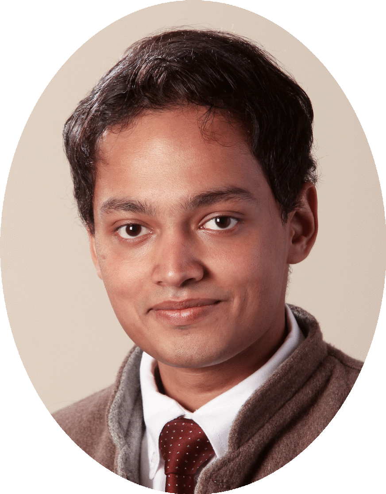

email: firstnamelastname@cmu.edu
Hello, there 👋. My name is Karan Singh.
I am an Assistant Professor of Operations Research at the Tepper School of Business at Carnegie Mellon University. I study the algorithmic aspects of machine learning. I’m especially interested in interactive learning paradigms, like reinforcement learning. My research both borrows techniques from and synthesizes tools in online learning, mathematical optimization, statistics and control theory. Some of my recent research topics:
- Algorithmic Reductions: Can one efficiently solve hard learning problems (e.g., reinforcement learning) given blackbox solvers for well-understood, easier ones (e.g., weak classsifiers)? Are such algorithmic reductions sample-efficient? We answer such these to give efficient algorithms for online boosting, boosting for RL, and RL with concave rewards.
- Nonstochastic Control paves an algorithmic, against a traditionally analytic, foundation for control theory. We give provably efficient instance-optimal control algorithms. By extending online learning to stateful systems and establishing low-regret gurantees, these go beyond both average-case notions of optimal control and worst-case notions in robust control.
- Privacy and Online Learning: Online convex optimization provides robust, yet performant, algorithms for learning and online decision-making. What is the best achievable regret for OCO under privacy constraints? This links to an older question on steadfastness in online learning, and we give the first results which match the best obtainable in non-private settings.
I completed my PhD in Computer Science at Princeton University, advised by Elad Hazan. Following this, I was a postdoc at Microsoft Research in Redmond. Long ago, I was an Computer Science undergrad at Indian Institute of Technology (IIT) Kanpur.
Draft of a new text on
Introduction to Online Nonstochastic Control with Elad Hazan
Publications
Improved Differentially Private and Lazy Online Convex Optimization: Lower Regret without Smoothness Requirements
with Naman Agarwal, Sayten Kale and Abhradeep Thakurta
International Conference on Machine Learning (ICML), 2024
proceedings soon | arXiv
Online Nonstochastic Model-Free Reinforcement Learning
with Udaya Ghai, Arushi Gupta, Wenhan Xia and Elad Hazan
Neural Information Processing Systems (NeurIPS), 2023
proceedings | arXiv
Differentially Private and Lazy Online Convex Optimization
with Naman Agarwal, Sayten Kale and Abhradeep Thakurta
Conference on Learning Theory (COLT), 2023
proceedings | arXiv soon
Best of Both Worlds in Online Control: Competitive Ratio and Policy Regret
with Gautam Goel, Naman Agarwal and Elad Hazan
Learning for Dyanmics and Control (L4DC), 2023
proceedings | arXiv
Variance-reduced Conservative Policy Itereation
with Naman Agarwal and Brian Bullins
Algorithmic Learning Theory (ALT), 2023
proceedings | arXiv
A Boosting Approach to Reinforcement Learning
with Nataly Brukhim and Elad Hazan
Neural Information Processing Systems (NeurIPS), 2022
proceedings | arXiv
Boosting for Online Convex Optimization
with Elad Hazan
International Conference on Machine Learning (ICML), 2021
proceedings | arXiv
A Regret Minimization Approach to Iterative Learning Control
with Naman Agarwal, Elad Hazan, Anirudha Majumdar
International Conference on Machine Learning (ICML), 2021
proceedings | arXiv
Improper Learning for Nonstochastic Control
with Max Simchowitz, Elad Hazan
Conference on Learning Theory (COLT), 2020
proceedings | arXiv
No-Regret Prediction in Marginally Stable Systems
with Udaya Ghai, Holden Lee, Cyril Zhang, Yi Zhang
Conference on Learning Theory (COLT), 2020
proceedings | arXiv
The Nonstochastic Control Problem
with Elad Hazan, Sham Kakade
Algorithmic Learning Theory (ALT), 2020
proceedings | arXiv
Logarithmic Regret for Online Control
with Naman Agarwal, Elad Hazan
Neural Information Processing Systems (NeurIPS), 2019 Oral Presentation (<0.5% of submissions)
Also, Best Paper Award at the OptRL workshop at NeurIPS 2019
proceedings | arXiv
Online Control with Adversarial Disturbances
with Naman Agarwal, Brian Bullins, Elad Hazan, Sham Kakade
International Conference on Machine Learning (ICML), 2019
proceedings | arXiv
Provably Efficient Maximum Entropy Exploration
with Elad Hazan, Sham Kakade, Abby Van Soest
International Conference on Machine Learning (ICML), 2019
proceedings | arXiv
Efficient Full-Matrix Adaptive Regularization
with Naman Agarwal, Brian Bullins, Xinyi Chen, Elad Hazan, Cyril Zhang, Yi Zhang
International Conference on Machine Learning (ICML), 2019
proceedings | arXiv
Spectral Filtering for General Linear Dynamical Systems
with Elad Hazan, Holden Lee, Cyril Zhang, Yi Zhang
Neural Information Processing Systems (NeurIPS), 2018 Oral Presentation (<0.5% of submissions)
proceedings | arXiv
Learning Linear Dynamical Systems via Spectral Filtering
with Elad Hazan, Cyril Zhang
Neural Information Processing Systems (NeurIPS), 2017 Spotlight (<5% of submissions)
Also, Spotlight Prize at New York Academy of Sciences’ ML Symposium, 2018
proceedings | arXiv
The Price of Differential Privacy for Online Learning
with Naman Agarwal
International Conference on Machine Learning (ICML), 2017
proceedings | arXiv
Efficient Regret Minimization in Non-Convex Games
with Elad Hazan, Cyril Zhang
International Conference on Machine Learning (ICML), 2017
proceedings | arXiv
Technical Reports
Dynamic Learning System
with Elad Hazan, Cyril Zhang
US Patent 11,138,513 B2, approved Oct 2021
Machine Learning for Mechanical Ventilation Control
with Daniel Suo, Cyril Zhang, Paula Gradu, Udaya Ghai, Xinyi Chen, Edgar Minasyan, Naman Agarwal, Julienne LaChance, Tom Zajdel, Manuel Schottdorf, Daniel Cohen, Elad Hazan
Machine Learning for Health (ML4H), 2021 Workshop Track
Featured in Princeton Engineering news.
Deluca — A Differentiable Control Library: Environments, Methods, and Benchmarking
with Paula Gradu, John Hallman, Daniel Suo, Alex Yu, Naman Agarwal, Udaya Ghai, Cyril Zhang, Anirudha Majumdar, Elad Hazan
NeurIPS Workshop on Differentiable Computer Vision & Physics, 2020 Oral Presentation
Towards Provable Control for Unknown Linear Dynamical Systems
with Sanjeev Arora, Elad Hazan, Holden Lee, Cyril Zhang, Yi Zhang
International Conference on Learning Representatios (ICLR), 2018 Workshop Track
Dynamic Task Allocation for Crowdsourcing
with Irineo Cabreros, Angela Zhou
ICML Workshop on Data Efficient Machine Learning, 2016
Lecture Notes
Linear Programming Fall 2023
Less simplex, more geometry and regret minimization. Algorithmic proofs.